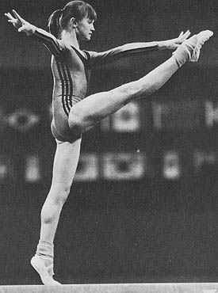

Svetlana Agapova (USSR)
1978 World Championships Team Gold Medalist

|
Medal Total World Championships: 1 Gold |
Svetlana was born on June 21, 1964 and trained at Spartak Voronezh.
Competition Results
1977
Chunichi Cup: 1st AA
International Junior Championships: 1st B, 2nd FX, 3rd UB
Jr. Friendship Tournament (Druzhba): 1st Team, 3rd AA
Jr. HUN-GDR Dual Meet: 1st Team, 5th AA, 3rd FX, 5th B
Jr. USSR-GDR Dual Meet: 1st Team, 4th AA
Jr. USSR-ROM Dual Meet: 1st Team, 4th AA
Jr. USSR-TG Russelheim (FRG) Dual Meet: 1st Team, 1st AA
1978
Champions All: 5th AA
Moscow News: 3rd AA, 2nd FX
World Championships: 1st Team, 18th AA (prelims)
World Cup: 8th AA, 3rd B
1979
Moscow News: 4th AA
USSR Cup: 3rd AA
1980
Riga International: 4th AA
USSR Championships: 6th AA, 2nd B, 5th V, 6th FX
USSR Cup: 6th AA
1981
USSR Championships: 6th B
This page was created on April 8, 2000 and
was last updated on April 15, 2020.
© Gymn Forum